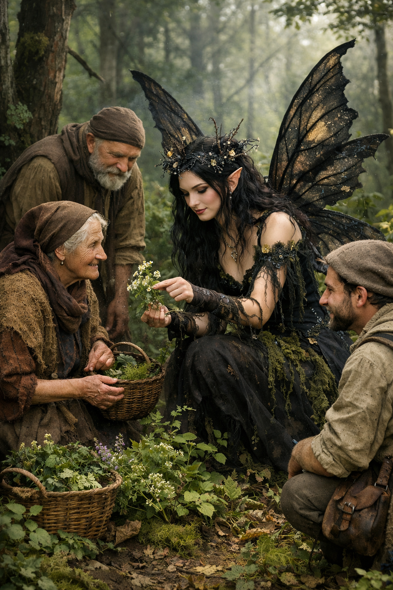
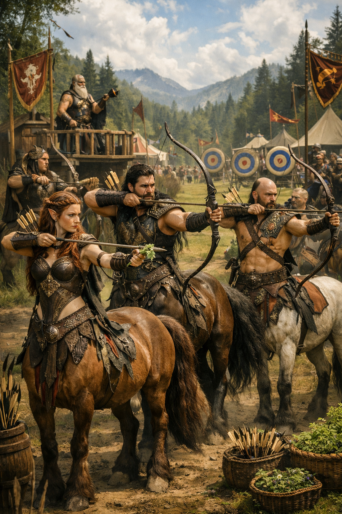

Dragões de Eldoria vistos voando sobre as montanhas.
Várias testemunhas relataram avistamentos de dragões de Eldoria voando sobre as montanhas geladas do norte. Os animais parecem estar em busca de alimento ou territorio.
Fada da Floresta Negra ajuda aldeões a encontrar ervas medicinais.

A Fada da Floresta Negra tem sido vista ajudando os aldeões a encontrar ervas medicinais raras para tratar doenças. Os moradores estão agradecidos pela ajuda e esperam que a fada continue a proteger a floresta.
Centauros de Valdora organizam torneio anual de arco e flecha.

Os centauros de Valdora estão preparando seu torneio anual de arco e flecha, um evento que reúne os melhores arqueiros do reino. A competição promete ser emocionante e uma excelente oportunidade para mostrar habilidades e esportividade.